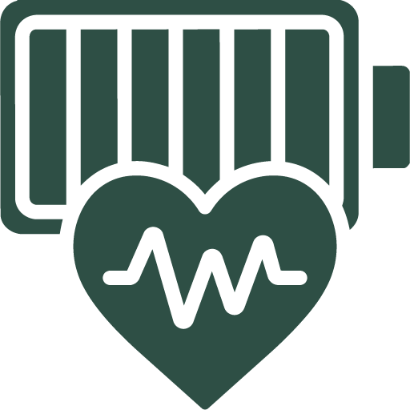
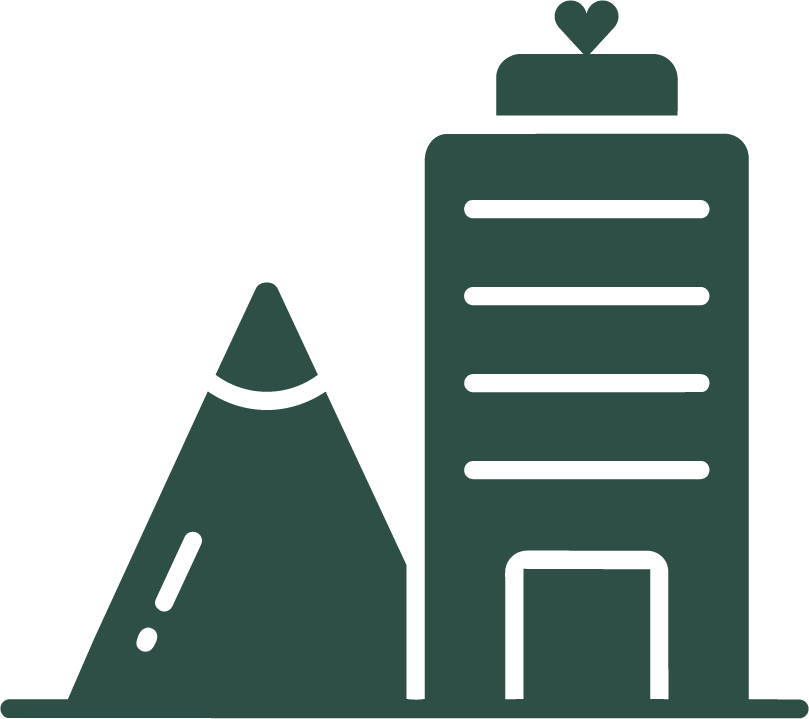
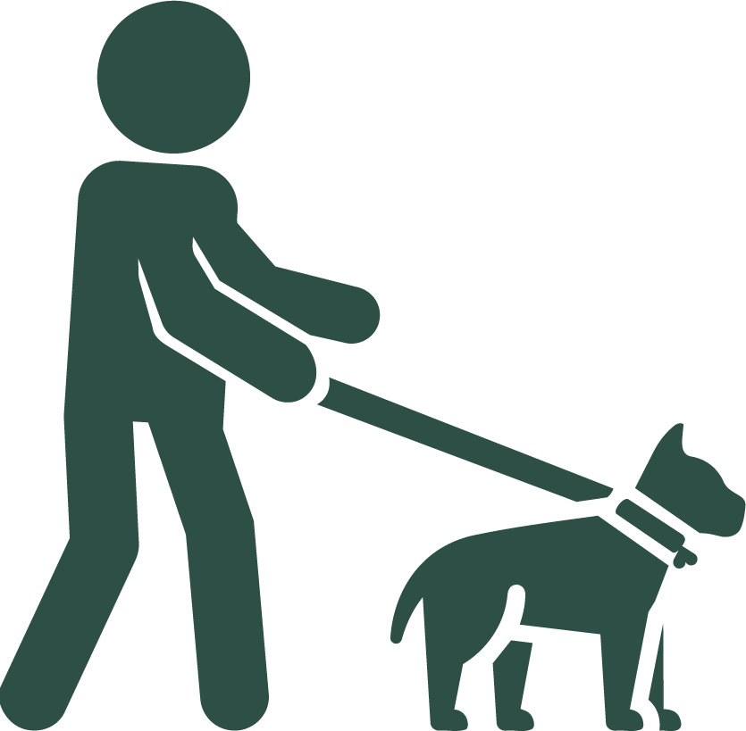
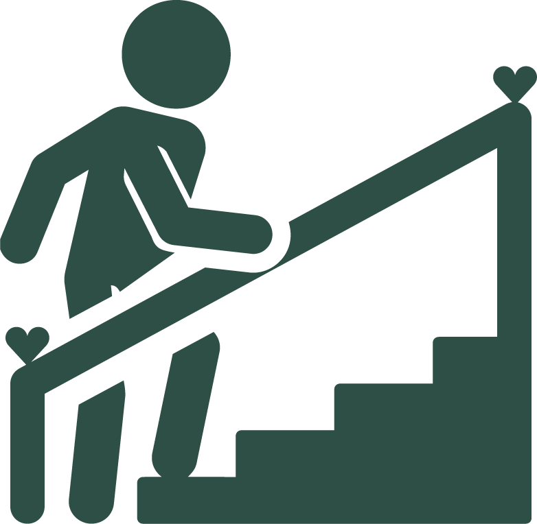
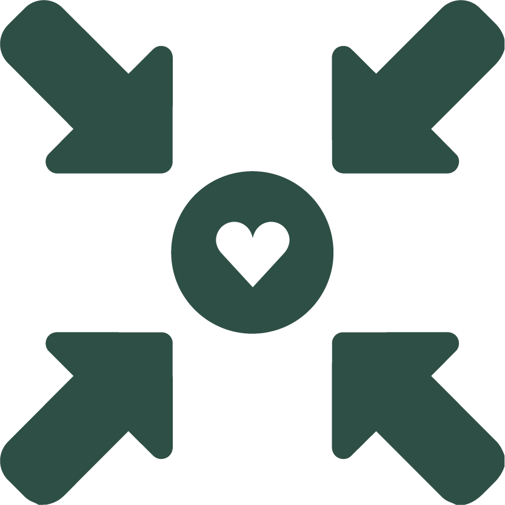
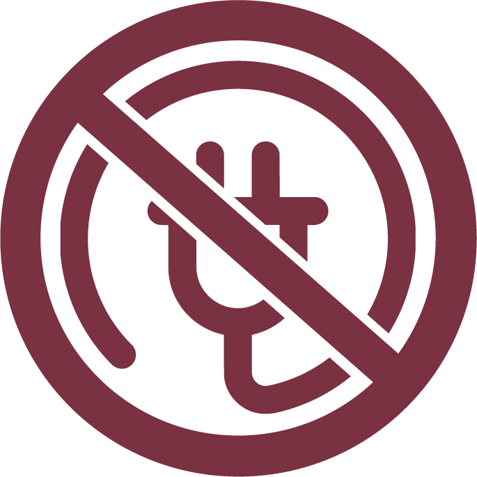
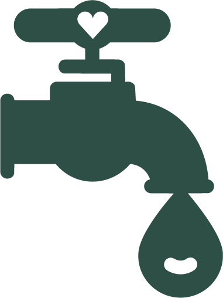
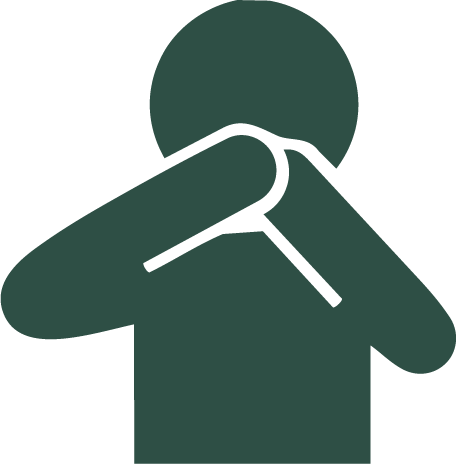
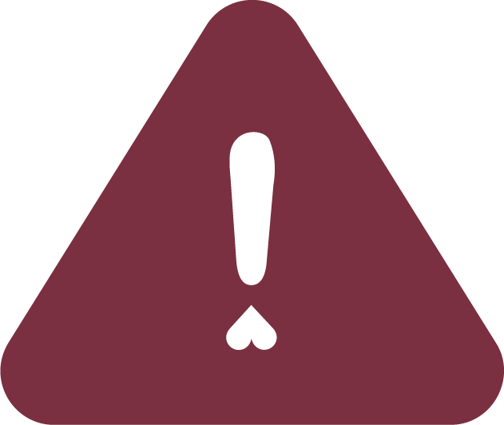

Revisa tu estado de salud.
UNGRD (p. 38).

Revisa tu estado de salud.
UNGRD (p. 38).

Si estás en la costa y el sismo fue fuerte, busca sitios altos por posible tsunami.
UNGRD (p. 41).


Evacúa por las escaleras, nunca en ascensor.
Con mascotas: correa o transportadora; si no las encuentras, evacúa (primero tu vida).
UNGRD (pp. 38 y 42-43).

Ve al punto de encuentro y permanece allí hasta que las autoridades indiquen. No regreses por iniciativa propia.
UNGRD (p. 42).

No enciendas fuego ni conectes aparatos eléctricos (posible fuga de gas) y no abras armarios.
UNGRD (p. 41).

Cierra el agua, luz y gas si puedes y lleva tu kit.
UNGRD (pp. 38 y 40).
Pueden venir réplicas, incluso más fuertes. Infórmate por radio o el medio de comunicación que tengas a la mano.
UNGRD (p. 42).
Usa mensajes de texto en lugar de llamadas; llama a las líneas de emergencia solo si es necesario, para no colapsar el sistema.
UNGRD (pp. 41-42).

La ayuda humanitaria puede tardar un par de días: raciona los insumos del kit.
UNGRD (p. 43).


Si quedas atrapado: mantén la calma, cúbrete boca y nariz, usa silbato, linterna o golpes sobre metal en lugar de gritar, respira lento y haz presión directa sobre heridas con hemorragia.
UNGRD (p. 40)

Si ves a alguien atrapado, repórtalo a los organismos de respuesta; no intentes sacarlo de los escombros.
UNGRD (p. 41).